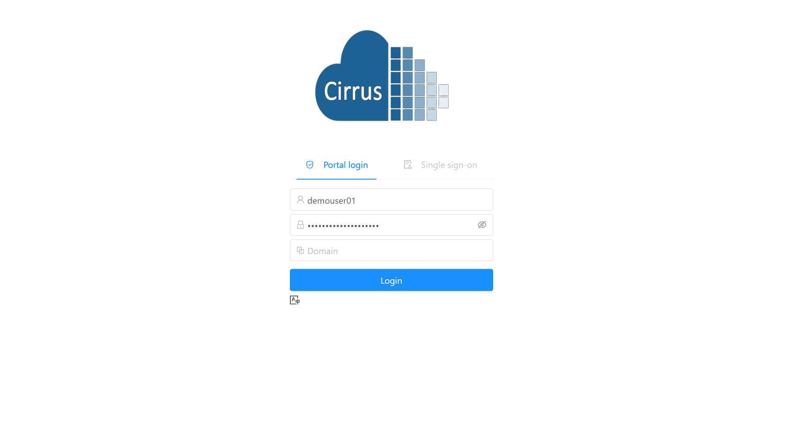
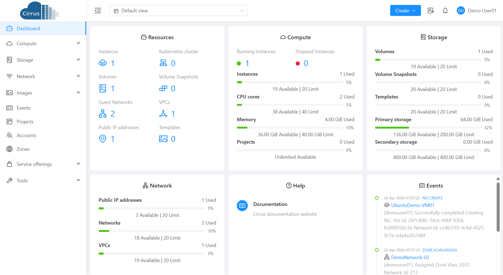

User Interface¶
Cirrus provides a web-based user interface that can be used by both administrators and end Users. The appropriate version of the UI is displayed depending on the credentials used to log in. The UI is available in all modern popular browsers including Chrome, Firefox, Edge and Safari.
You can access the URL through here.
You’ll see a login screen where you specify the following to proceed to your Dashboard:
Username -> The User ID of your Account.
Password -> The password associated with the User ID.
Domain -> The domain associated with the User ID.

End User’s UI Overview¶
The Cirrus UI helps Users of cloud infrastructure to view and use their cloud resources, including Instances, Templates and ISOs, data volumes and Snapshots, Guest Networks, and IP addresses.
